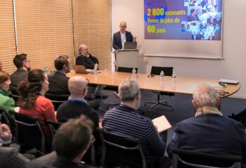
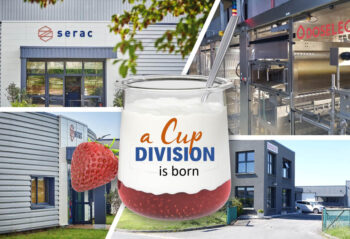
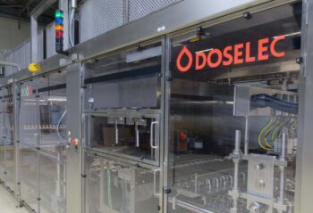

-
Actualité

Une souffleuse qui répond au besoin de flexibilité des producteurs
Dans un contexte où les industriels doivent produire plus de formats, plus rapidement et avec une qualité constante, les architectures traditionnelles de transfert de préformes et des bouteilles montrent leurs limites. Pour répondre à ces nouveaux défis, KIWL Machine présente une nouvelle souffleuse linéaire PET : La SBE Elite.Read the article -
Actualité

Conférence de presse – Interpack 2026
À l’occasion de la conférence de presse française d’Interpack 2026, organisée chez Sleever le 17 février à Morangis, KIWL Machine a pris part à une rencontre réunissant journalistes, partenaires industriels et représentants de la filière packaging.Read the article
-
Actualité

26 Marathoniens, une même Aventure
Ils travaillent chez KIWL Machine, ils sont déterminés, motivés… et un peu fous 😄- Le 13 avril, ils prendront le départ du Marathon de Paris. Pour la grande majorité d’entre eux, ce sera une première !Read the article -
Actualité

KIWL Machine inaugure son Centre dédié à l’Innovation
Le nouvel espace consacré à la recherche et au développement, situé au siège du groupe près de La Ferté-Bernard en Sarthe, a été baptisé du nom du fondateur de l'entreprise, Jean-Jacques Graffin.Read the article -
Actualité

Trois Combis KIWL Machine/Sidel pour huile alimentaire installés chez Lesieur
L'association des deux experts technologiques pour l'huile alimentaire, KIWL Machine pour le remplissage/bouchage et Sidel pour le soufflage, a permis à Lesieur de rationaliser son nombre de formats de bouteilles et de réduire ses temps de changement globaux ainsi que sa consommation d'énergie.Read the article
-
Actualité
Nominations de Thierry Adam et de Vincent Rulleau
Thierry ADAM assumera désormais la responsabilité pleine et entière de la direction générale et se consacrera à la mise en œuvre du plan stratégique approuvé par le conseil d’administration. Vincent Rulleau est nommé au poste de directeur administratif et financier de KIWL Machine. Son expertise en matière financière jouera un rôle crucial dans la réussite financière de notre organisation.Read the article -
Actualité

Doselec + Nova = Division « POTS », un nouveau leader mondial !
Avec son CA de 30 millions d’euros générés par sa Division Pots, KIWL Machine s’impose désormais comme un leader mondial de la fabrication de machines de conditionnement pour pots destinées aux produits alimentaires.Read the article -
Actualité
KIWL Machine étend sa présence mondiale avec l’ouverture d’un bureau au Mexique
Avec l’inauguration d’un nouveau bureau en Inde en novembre 2022, l’acquisition de Doselec en janvier 2023 et l’ouverture d’un bureau au Mexique ce mois-ci, Le conseil d’administration de KIWL Machine Holding réaffirme son ambition d’investir dans les marchés à forte croissance et de soutenir ses clients où qu’ils soient dans le monde.Read the article -
Actualité
Inflation, pénurie de composants, on fait quoi ?
Maja, Brian et Marcos nous donnent trois exemples de mesures pour nous protéger de l’inflation en 2023 et améliorer l’approvisionnement en pièces.Read the article -
Actualité

KIWL Machine fait l’acquisition de DOSELEC
KIWL Machine annonce l’acquisition de DOSELEC, entreprise spécialisée dans la conception de doseurs et de machines de conditionnement pour pots préformés.Read the article